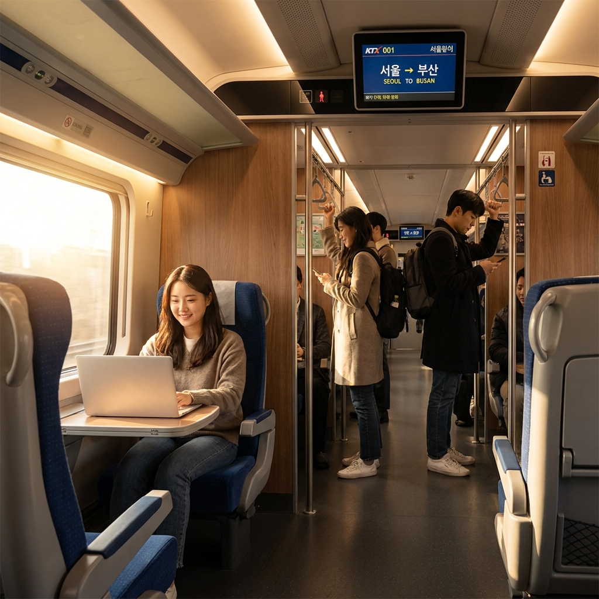

KTX N카드 vs 정기승차권 할인율과 손익분기 비교 — 주 2~3회 출퇴근·출장러 실제 요금 계산표
KTX를 이용해 주 2~3회 출퇴근하거나 정기 출장을 다니는 이용자라면, 주당 이용 일수에 따라 N카드와 정기승차권의 손익분기점이 명확하게 갈립니다.
주 1~3회 탑승하며 반드시 지정 좌석에 앉아야 한다면 N카드(15~40% 할인 횟수권)가 압도적으로 유리하며, 주 4~5회 매일 통근하며 자유석·입석을 감수할 수 있다면 정기승차권(약 45% 할인)이 총비용 면에서 절약됩니다.
서울~천안아산, 서울~오송, 서울~대전 등 주요 통근 구간 기준으로 실제 월간 납부액을 계산해 보면, 주 3회(월 12~13회 왕복) 탑승 시 N카드를 활용했을 때 정기권 대비 좌석 확보 보장과 일정 취소의 유연성에서 훨씬 높은 실익을 얻을 수 있습니다.
KTX 고속열차 승강장과 스마트폰 코레일톡 앱으로 승차권을 확인하는 승객 / AI 제작 이미지
01 | KTX 잦은 이용객의 고민: N카드가 유리할까, 정기승차권이 나을까?
수도권과 지방 혁신도시, 대전·세종·오송 연구단지 등을 정기적으로 오가는 직장인들에게 KTX 요금은 매달 지출되는 고정비 중 가장 큰 비중을 차지합니다.
한국철도공사(코레일)는 정기 이용객을 위해 크게 두 가지 할인 제도를 운영하고 있습니다. 바로 'KTX N카드'와 'KTX 정기승차권'입니다.
많은 이용자가 "무조건 할인율 숫자가 높은 정기권이 이득 아닐까?"라고 단순하게 생각하지만, 재택근무 확대나 유연근무제, 잦은 출장 일정 변경 등의 변수가 겹치면 오히려 정기권이 큰 손해로 이어지는 경우가 빈번합니다.
자신의 출근 빈도, 좌석 확보 필요성, 스케줄 변동 가능성을 정확히 따져보고 선택해야 소중한 교통비를 극대화하여 절약할 수 있습니다.
02 | KTX N카드 개념과 구매 비용, 구간별 기본 할인 구조
KTX N카드는 지정한 구간을 일정 기간 동안 정해진 횟수만큼 열차별 15%에서 최대 40%까지 할인받아 '지정 좌석'을 예매할 수 있는 모바일 할인 횟수권입니다.
코레일톡 앱에서 카드 형태로 구매하며, N카드 자체를 구매할 때 소정의 카드값이 발생합니다.
| N카드 권종 구분 |
유효 기간 |
사용 가능 횟수 |
N카드 구매 가격 (카드값) |
| 1인권 (단독형) |
2개월 ~ 3개월 |
10회 ~ 30회 |
지정 구간 일반실 기준운임 × 횟수 × 5% |
| 2인권 (동행형) |
3개월 |
20회 ~ 30회 |
지정 구간 일반실 기준운임 × 횟수 × 7% |
| 3구간권 (다구간형) |
2개월 ~ 3개월 |
10회 ~ 30회 |
지정 구간 중 가장 비싼 기준운임 × 횟수 × 7% |
예를 들어 서울~대전 구간(편도 편도 23,700원)을 10회 이용하는 1인권을 구매한다면, 카드 구매비는 `23,700원 × 10회 × 5% = 11,850원`입니다.
이 카드를 소지하면 해당 구간 열차 예매 시 열차 혼잡도에 따라 최소 15%에서 최대 40% 할인된 가격으로 일반실 좌석을 지정하여 예매하게 됩니다. (평균 15~25% 할인율 적용 빈도가 높음)
03 | KTX 정기승차권 종류(10일·1개월·기간자유형)와 할인율 기준
반면 KTX 정기승차권은 정해진 기간 동안 해당 구간의 열차를 무제한(1일 2회, 왕복 기준) 탑승할 수 있는 패스형 승차권입니다.
정기권은 일반 정기권(1개월, 10일)과 기간자유형 정기권(10일~1개월 중 주말 포함 여부를 본인이 선택)으로 나뉩니다.
• 일반 정기권 할인율: 성인 기준 45% ~ 50% 할인 (청소년·어린이는 최대 60% 할인)
• 탑승 조건: 원칙적으로 '입석 또는 자유석(평일 출퇴근 시간대 8호차~10호차 등 지정 운영)'만 이용 가능합니다.
• 좌석 지정 불가: 사전에 좌석을 지정할 수 없으며, 만약 빈자리가 없으면 통로에 서서 가야 한다는 결정적인 단점이 있습니다.
04 | 주당 탑승 횟수(주 2회 vs 주 3회 vs 주 5회)별 실제 월 교통비 계산표
가장 핵심인 '서울~대전' 구간(편도 정가 23,700원 / 월 4주 기준)을 토대로, 탑승 빈도별 실제 월간 지출 총비용을 정밀 비교해 보겠습니다. (N카드는 평균 할인율 20% 적용 + 카드값 5% 반영 가정)
| 구분 (월 탑승 횟수) |
일반 예매 (정가) |
KTX N카드 (월 지출액) |
KTX 정기승차권 (1개월권) |
어느 쪽이 유리한가? |
| 주 1회 왕복 (월 8회) |
189,600원 |
약 161,160원 |
약 521,400원 (고정) |
N카드 압승 (정기권은 대규모 손해) |
| 주 2회 왕복 (월 16회) |
379,200원 |
약 322,320원 |
약 237,000원 (고정) |
N카드 추천 (좌석 보장 가치 감안 시 실익 높음) |
| 주 3회 왕복 (월 24회) |
568,800원 |
약 483,480원 |
약 237,000원 |
손익분기점 갈림길 (체력·좌석 vs 비용 절약) |
| 주 5회 왕복 (월 40회) |
948,000원 |
약 805,800원 |
약 237,000원 |
정기승차권 압승 (월 28만 원 이상 대폭 절감) |
위 계산표에서 보듯, 주 2회 이하 탑승 시에는 정기권을 사면 무조건 손해입니다.
주 3회 출근하는 하이브리드 근무자의 경우 금액 자체는 정기권이 약 24만 원 저렴해 보이지만, 아래의 좌석 환경과 환불 리스크를 따져보면 N카드를 선택하는 이용자가 압도적으로 많습니다.

KTX 좌석에 앉아 노트북으로 업무를 보며 정기 승차권을 이용하는 출퇴근 직장인 / AI 제작 이미지
05 | 좌석 지정 가능 여부와 입석·자유석 이용 환경의 현실적 차이
N카드와 정기권의 가장 본질적인 차이는 바로 '내 자리의 보장 여부'입니다.
출퇴근 피크 시간대(오전 7~8시, 오후 18~19시) 경부선 및 호남선 KTX는 거의 전 열차가 매진됩니다.
• N카드 이용자: 승차일 1개월 전부터 코레일톡에서 원하는 호차와 좌석(창가·통로)을 직접 지정하여 편안하게 앉아서 출퇴근할 수 있습니다. 피로도 감소와 이동 중 업무 처리가 가능합니다.
• 정기권 이용자: 지정 좌석이 없으므로 평일 자유석 객차(주로 17~18호차 또는 8호차)에 일찍 줄을 서서 자리를 잡아야 합니다. 만약 앞선 정차역에서 자유석이 이미 꽉 차면 1시간~1시간 30분 동안 통로에 서서 가야 하는 체력적 한계가 발생합니다.
06 | 일정 변경·취소 시 환불 규정과 위약금 비교
직장 생활에서는 야근, 회식, 출장 연기, 휴가 등 일정 변경이 빈번하게 일어납니다. 이때 두 제도의 환불 정책 차이가 지출에 큰 영향을 줍니다.
🔄 환불 및 스케줄 변경 규정 비교
• N카드 승차권 취소: 일반 승차권과 동일한 반환 위약금 규정이 적용됩니다. 출발 3시간 전까지는 위약금 0원(무료 취소)이며, 취소 즉시 N카드 사용 횟수가 1회 자동으로 복원됩니다. 일정이 취소되어도 손해가 거의 없습니다.
• 정기승차권 환불: 정기권은 사용 개시일 이후 환불 시 '사용일수 × 편도 기준운임(할인 없는 정가 2회분) + 최저 반환수수료'를 공제하고 잔액을 돌려줍니다. 즉, 개시 후 며칠만 지나도 환불 가능 금액이 거의 0원에 수렴하여 일정 변경에 따른 보호를 받지 못합니다.
07 | KTX 마일리지 적립 여부와 제휴 신용카드 추가 청구할인 중복 팁
알뜰한 교통비 절약을 위해 추가 혜택 중복 적용 여부를 반드시 확인해야 합니다.
• 마일리지 적립: N카드로 할인 예매한 승차권은 결제 금액의 5% KTX 마일리지가 정상 적립됩니다. 반면 정기승차권은 대폭 할인 상품이라는 이유로 코레일 마일리지가 일절 적립되지 않습니다.
• 신용카드 청구할인 중복: 철도 할인 혜택이 탑재된 신용카드(예: 신한 딥오일, 삼성 iD VITA, KB국민 탄탄대로 등 코레일 5~10% 청구할인 카드)로 N카드 구매비 및 승차권을 결제하면 N카드 기본 할인에 카드사 청구할인이 중복 적용됩니다.
• K-패스 적용 여부: KTX, SRT 등 고속철도는 전국 지자체 대중교통 환급 제도인 K-패스 환급 대상에서 제외되므로 유의하시기 바랍니다.
08 | 주 2~3회 출퇴근러를 위한 상황별 맞춤 추천 가이드 (손익분기점)
고민을 한 방에 끝낼 수 있도록 이용 유형별 최종 선택 기준을 정리해 드립니다.
🎯 나에게 맞는 KTX 할인 수단 선택 공식
1. N카드를 선택해야 하는 분
- 주 2회 이하 탑승하는 하이브리드 근무자
- 주 3회 탑승하지만 허리 통증이나 피로도 때문에 무조건 앉아서 가야 하는 분
- 출장이나 미팅 시간이 자주 바뀌어 유연한 예매 변경이 필요한 분
- 마일리지 적립과 신용카드 추가 혜택을 챙기고 싶은 분
2. 정기승차권을 선택해야 하는 분
- 주 4~5회 매일 정해진 시간에 예외 없이 출퇴근하는 고정 통근자
- 시발역(서울역, 용산역, 행신역 등)에서 탑승하여 자유석 착석 확률이 90% 이상인 분
- 한 달 교통비를 20만 원대 초반으로 무조건 고정하여 최소화해야 하는 분
09 | KTX N카드 및 정기승차권 구매 전 필수 체크리스트 & FAQ
마지막으로 구매 전 확인해야 할 핵심 사항을 점검해 보세요.
📋 구매 전 3단계 자가진단 체크리스트
[ ] 이번 달 공휴일 및 연차 일수 계산: 징검다리 연휴가 많은 달에는 정기권의 가성비가 급락합니다.
[ ] 출퇴근 탑승역의 자유석 착석 가능성 확인: 중간 정차역(수원, 천안아산 등)은 아침 피크 시간대 자유석 만석 확률이 높습니다.
[ ] 코레일톡 앱 최신 버전 업데이트: N카드 및 기간자유형 정기권은 코레일톡 모바일 앱 전용 상품입니다.
❓ 자주 묻는 질문 FAQ
Q1. N카드로 예매한 표를 다른 사람에게 양도할 수 있나요?
A1. 불가능합니다. N카드는 본인 회원번호에 귀속되는 상품으로, N카드로 할인받은 승차권은 타인에게 선물하거나 캡처하여 양도할 수 없으며 부정승차 적발 시 10배 부가운임이 부과됩니다.
Q2. N카드 유효기간이 끝났는데 횟수가 남았으면 어떻게 되나요?
A2. 유효기간 만료 전 1회에 한해 유효기간 연장이 가능합니다. 기간 내에 다 쓰지 못하면 잔여 횟수에 비례한 카드값 환불(수수료 공제)을 신청할 수 있습니다.
Q3. 정기권으로 주말에도 KTX를 탈 수 있나요?
A3. 일반 정기권은 원칙적으로 평일(월~금)만 사용 가능하며 공휴일과 주말은 이용할 수 없습니다. 주말 탑승이 필요하다면 코레일톡 '기간자유형 정기권'에서 주말 포함 옵션을 직접 설정하여 구매해야 합니다.
#KTXN카드
#KTX정기승차권
#KTX할인방법
#KTX출퇴근비용
#코레일톡할인
#KTX손익분기점
#기차정기권
#KTX자유석
#KTX마일리지
#교통비절약